왜 한 단어 답에 5만 토큰이 들까요
발표자는 유튜브 제목 후보 열 개를 뽑는 같은 일을 방식만 바꿔 돌렸어요. 에이전트에게 통째로 맡기면 평균 약 1달러, 마지막 방식은 그 263분의 1이었어요. 차이가 어디서 나는지 보려면 먼저 Claude Code가 요청 한 번에 무엇을 보내는지 알아야 해요.
AI 모델은 앞 대화를 기억하지 못해요. 그래서 Claude Code는 요청할 때마다 지금까지의 내용을 전부 다시 보내요. 아래 화면 왼쪽의 세 칸, 시스템 프롬프트와 도구 설명서와 CLAUDE.md가 기본으로 실리고, 아래 '이전 대화 모음'까지 매번 따라붙어요.
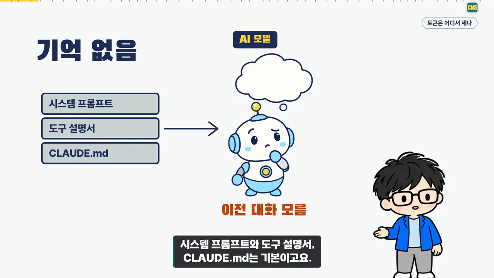
똑같이 반복되는 앞부분은 프롬프트 캐싱 덕분에 캐시에서 읽어 값이 싸져요. 다만 싸다고 공짜는 아니고, 처음 캐시에 쓸 때는 오히려 입력값의 두 배를 낸다고 발표자는 설명해요. 결국 한 번에 얼마나 싣고 몇 번 다시 싣느냐가 비용을 정해요.
하늘 색 하나 묻는 데 드는 값
가장 작은 질문으로 재 봤어요. 아래 터미널 위쪽 ①은 평소대로 보낸 것이에요. 답은 '파랑' 한 단어인데 보낸 토큰이 53,043개(캐시 쓰기 42,163 · 캐시 읽기 10,873 · 출력 5), 비용은 $0.1710이에요. 아래쪽 ②는 같은 질문에 노란색으로 표시한 옵션을 붙였어요. 도구를 끄는 --tools "", 시스템 프롬프트를 한 줄로 바꾸는 --system-prompt, 설정 파일을 읽지 않게 하는 --setting-sources ""예요. 토큰은 574개, 비용은 $0.0024로 떨어졌어요.
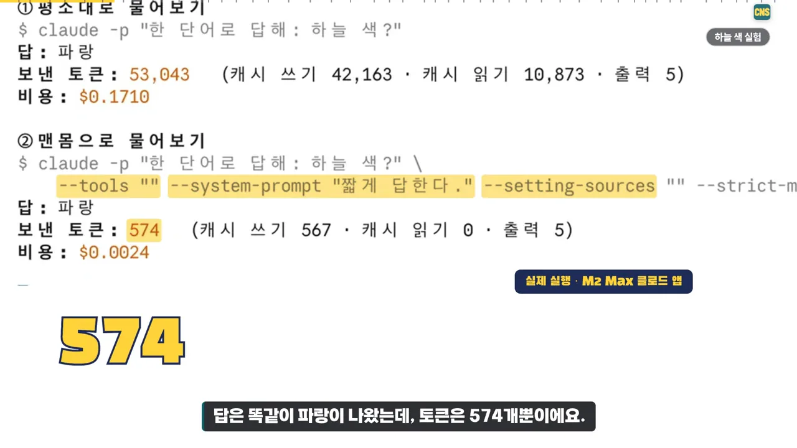
질문 옆에 따라가는 '기본 짐'
질문 자체는 열몇 토큰뿐이에요. 나머지는 Claude Code가 기본으로 싣는 짐이에요. 아래 슬라이드 왼쪽 목록처럼 파일을 읽고 쓰고 명령을 실행하는 도구 설명서, 에이전트로 일하는 법을 적은 긴 시스템 프롬프트, 깔아 둔 스킬·플러그인 목록이 매번 붙어요. 여기에 발표자의 CLAUDE.md가 얹히는데, 이 파일 하나만 재 보니 약 2만 1천 토큰이었어요.
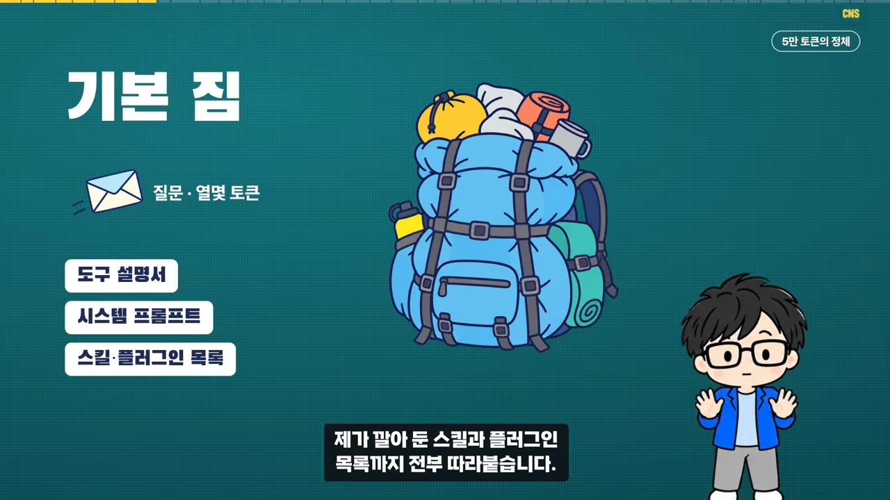
일주일 기록이 보여 준 새는 곳
실제 작업에서는 어떨까요. 발표자는 영상 기획 폴더에서 지난 일주일 동안 쓴 대화 기록을 다 모았어요. 대화 103개, 모델 호출 7,923번이에요. 아래 화면 맨 위가 토큰 합계 3,280,898,834개이고, 바로 아래 '캐시 읽기(앞 내용 다시 읽기)' 줄이 98.70%를 차지해요. AI가 실제로 쓴 글인 출력은 0.18%예요. 아래 '모델별 호출'에서는 claude-opus-5-5가 7,853번, 99.1%예요.
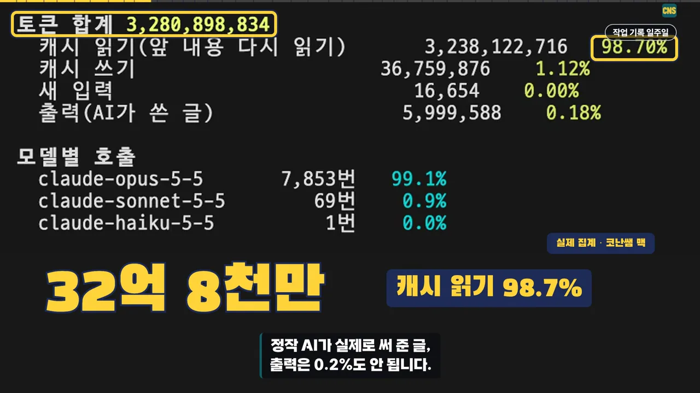
이걸 API(Application Programming Interface) 정가로 바꾸면 일주일에 1,050달러예요. 발표자는 구독으로 쓰니 청구서 대신 사용량 한도에서 빠져요. 아래 막대에서 노란 부분이 캐시 읽기 61.7%예요. 나머지는 캐시 쓰기가 약 27%, 출력이 약 11%라고 해요. 캐시 읽기 단가는 입력값의 20분의 1밖에 안 되지만, 싸게 수천 번 읽으니 결국 가장 큰 덩어리가 됐어요.
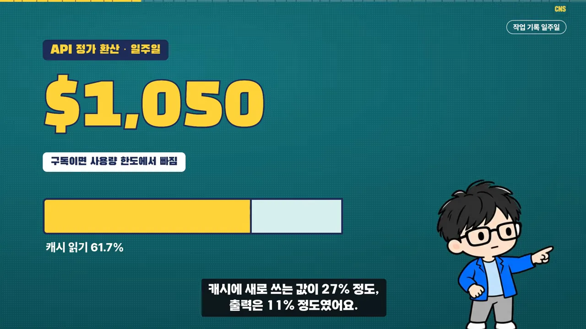
일곱 배로 불어난 CLAUDE.md
발표자는 지적받은 걸 그때그때 CLAUDE.md에 한 줄씩 적어 왔어요. 좋은 습관이지만 이 파일은 대화가 한 번 오갈 때마다 같이 실려요. 아래 막대그래프가 파일 크기(바이트)예요. 10월 21일 6,136에서 10/22 10,263, 10/24 20,653을 거쳐 지금 43,373이 됐어요.
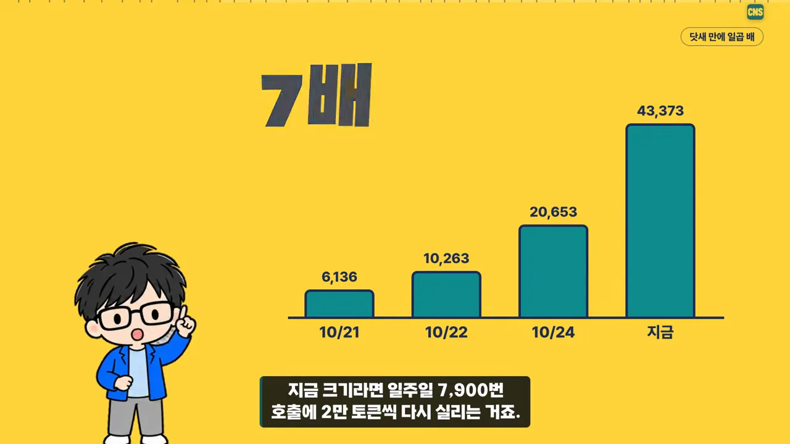
실험 ① 통째로 맡기기부터 도구 끄기까지
CLAUDE.md를 줄이면 비용도 확 줄까요? 발표자는 감 대신 실험으로 확인했어요. 과제는 자기가 매번 하는 일, 이 영상의 제목 후보 10개와 썸네일 문구 2줄을 뽑는 거예요. 아래 슬라이드 오른쪽 저울에 붙은 title_check가 판정을 맡아요. 위쪽 '제목 50자', '썸네일 30자' 같은 채널 규칙을 코드로 검사하고, 실패가 하나도 없어야 통과예요.
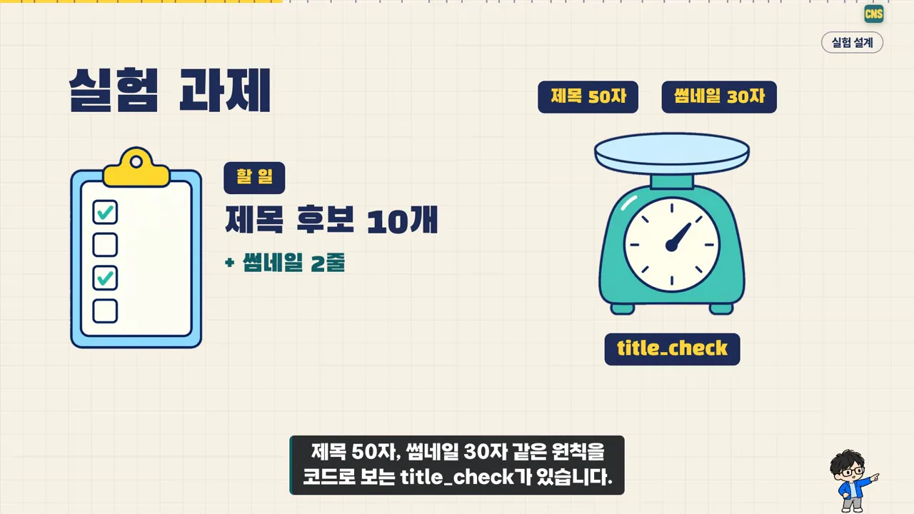
조건도 맞췄어요. 판마다 작업 폴더를 새로 깔고 자동 메모리를 껐어요. 비용은 Claude Code가 계산한 정가 그대로이고, 우연을 줄이려고 방식마다 세 판씩 돌렸어요.
기준선: 에이전트에게 통째로 맡기기
첫 방식은 평소 쓰는 그대로예요. 클로드 앱에 폴더를 열고 "브리프를 읽고, 제목을 쓰고, 검사해서 저장해"라고 한 번에 맡겼어요. 클로드가 스스로 할 일을 나누고 파일을 열며 일했고, 열 개 모두 검사를 통과했어요. 이 한 판은 모델 호출 6번에 67만 토큰, 정가 83센트였어요. 터미널에서 세 판 돌린 평균은 약 1달러였고, 판마다 9~11턴을 돌며 턴마다 앞 내용을 통째로 다시 읽었어요. 이 1달러가 기준선이에요.
판정을 코드로 옮겼는데 19%만 줄었어요
첫 번째로 바꾼 건 판정이에요. 합격 여부를 AI에게 묻지 않고 코드가 정해요. 아래 슬라이드 왼쪽 요리사(AI)는 후보를 쓰기만 하고, 오른쪽 저울(파이썬)이 title_check로 검사한 뒤 떨어진 것만 다시 시켜요. 검사를 코드가 하면 그 부분 토큰은 0이니 비용이 확 줄 거라 예상했어요.
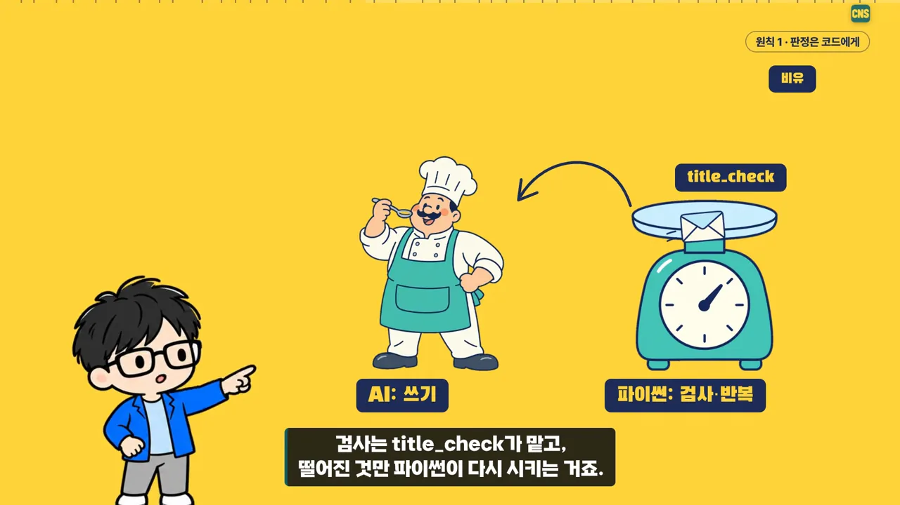
그런데 일꾼 안을 들여다보니 후보만 쓰라고 했는데도 제목 공식 파일을 열어 읽고, 스스로 title_check까지 돌리고 있었어요. 원인은 아래 화면 가운데 카드에 뜬 CLAUDE.md 규칙이에요.
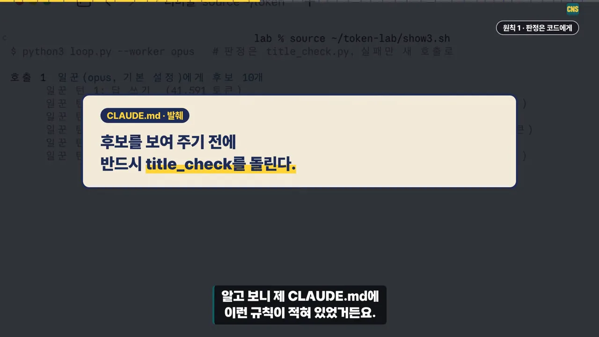
아래 터미널의 노란 테두리 안이 일꾼이 돈 턴이에요. '답 쓰기' 사이사이에 head -c 2500 data/title_formulas.md로 공식 파일을 읽고 python3 tools/title_check.py를 돌려요. 오른쪽 괄호의 토큰 수는 1턴 41,591에서 9턴 54,933으로 점점 커져요. 턴마다 앞 내용을 통째로 다시 읽은 거예요.
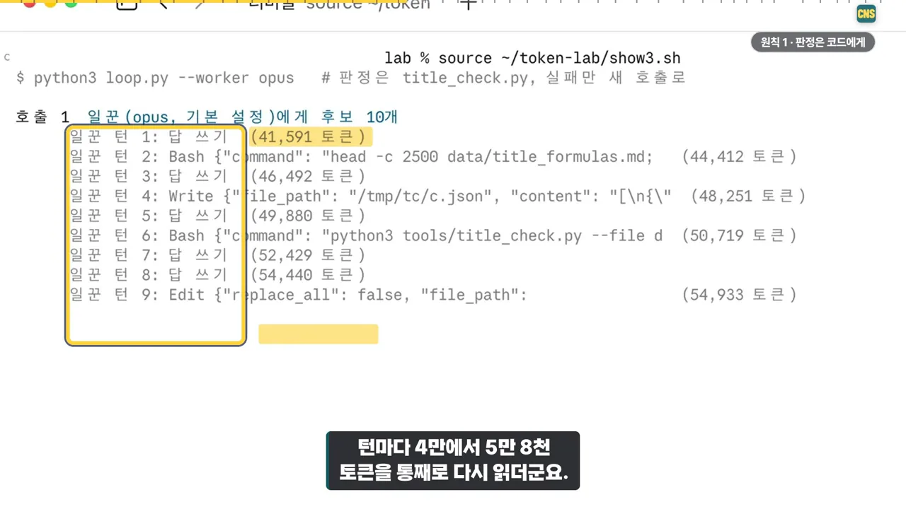
도구만 끄면 캐시 쓰기가 늘어요
다음엔 일꾼에게서 도구만 뺏었어요. 파일을 못 읽고 명령도 못 돌리게 하니 턴은 한두 번으로 줄었어요. 그런데 아래 슬라이드의 눈금처럼 비용은 $0.4318에서 $1.1088까지 들쭉날쭉했고 평균은 $0.7161이었어요. 요리사가 여전히 '기본 짐은 그대로' 들고 있다는 게 그림의 요점이에요.
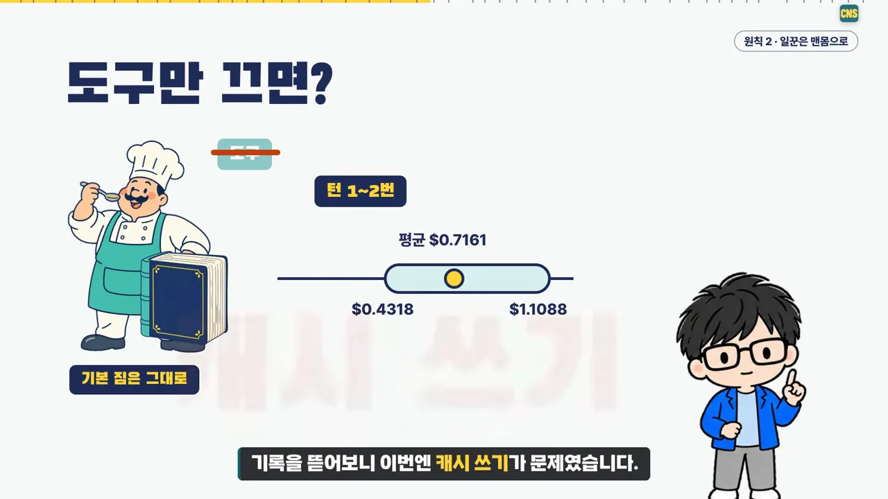
기록을 뜯어보니 이번엔 캐시 쓰기가 문제였어요. 아래 슬라이드 왼쪽 책(시스템 프롬프트 · CLAUDE.md)이 '캐시 · 판마다 새로 쓰기' 상자로 들어가요. 그 아래에 Opus 100만 토큰당 입력 $4, 캐시 쓰기 $8을 나란히 적고, 오른쪽에 크게 '×2'를 붙였어요.
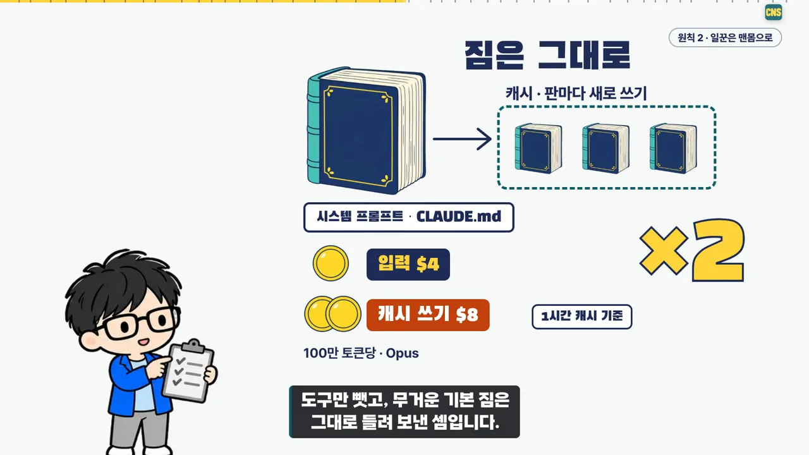
실험 ② 맨몸 일꾼, 싼 모델, CLAUDE.md 다이어트
그래서 일꾼을 완전히 맨몸으로 보냈어요. 아래 화면의 파란 태그 세 줄이 바꾼 조건이에요. 도구와 설정 파일을 끄고, 기본 시스템 프롬프트를 한 줄로 바꾸고, 모델은 똑같이 Opus에 꼭 필요한 규칙 다섯 줄만 질문에 넣었어요. 명령 줄 끝의 --lean이 이 맨몸 호출을 켜는 발표자 스크립트의 옵션이에요.
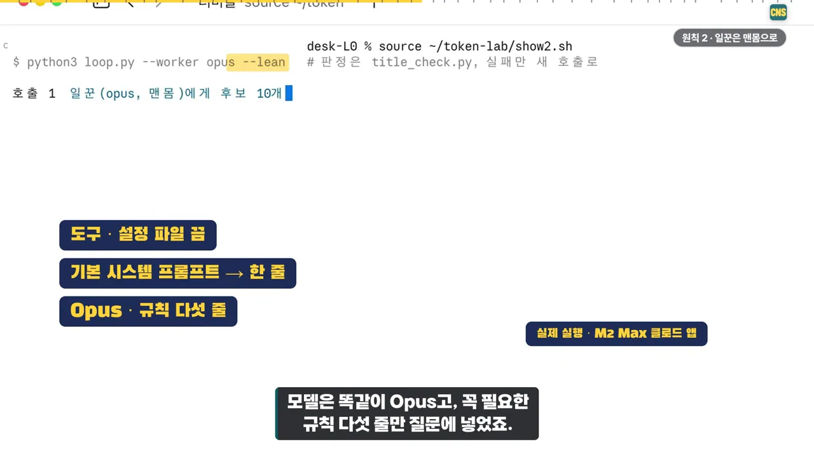
실패한 것만 새 호출로
첫 호출에서 열 개 중 아홉 개가 통과했어요. 썸네일에 같은 조사를 두 번 쓴 하나만 떨어졌어요. 두 번째 호출에는 그 하나와 떨어진 이유만 넣었어요. 아래 슬라이드의 초록 칸 아홉 개와 빨간 칸 하나가 첫 호출 결과이고, 오른쪽 호출 2의 봉투가 훨씬 작아요. 두 호출 사이 선이 이어지지 않은 데 주목하세요. 첫 대화를 이어 붙이지 않고 새로 부른 거예요.
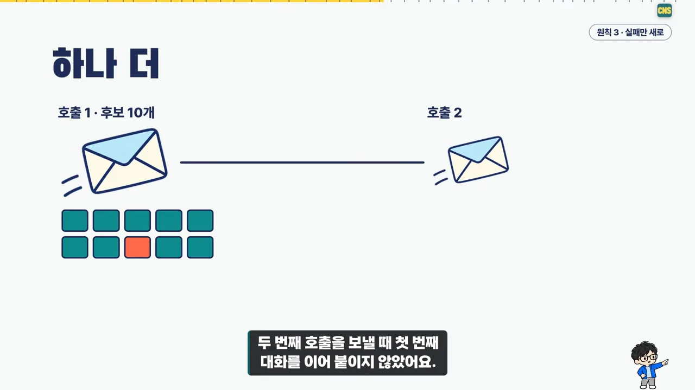
대화를 계속 이어 가면 턴마다 앞 내용이 통째로 다시 실려요. 실패만 들고 새로 부르면 매번 작은 짐으로 시작해요. 무엇이 끝났고 무엇이 남았는지는 대화가 아니라 파일과 코드가 기억하게 하라는 게 발표자의 말이에요.
아래 터미널이 실제 기록이에요. 호출 1은 2,632토큰 $0.0321에 '통과 9 · 탈락 1', 호출 2는 2,070토큰 $0.0225에 '통과 1 · 탈락 0'이에요. 합계 줄은 '호출 2 · 토큰 4,702 · 비용 $0.0545 · 25초', 제목 10개 중 10개 통과예요. 그 아래에는 다음 실험인 --worker sonnet --lean이 막 시작됐어요.
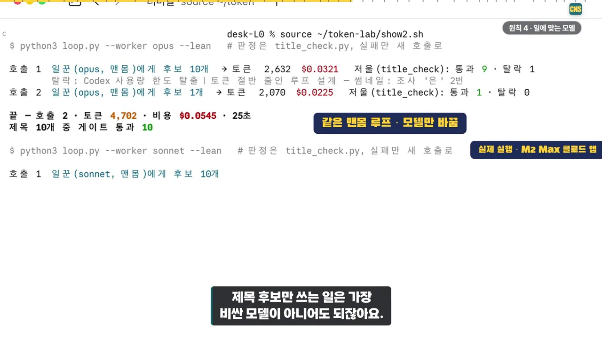
일꾼 모델을 낮추면
제목 후보만 쓰는 일에 가장 비싼 모델이 꼭 필요하진 않아요. Sonnet으로 돌리니 세 판 평균 4센트였어요. 가장 싼 Haiku는 한 번 호출에 열 개가 전부 통과했고, 세 판 평균이 1센트의 절반도 안 됐어요. 처음 1달러의 263분의 1이에요. 반토막을 노렸는데 자릿수가 바뀌었어요.
그럼 품질은 어떨까요. 일곱 방식 모두 30개 중 30개가 검사를 통과했지만, 이 검사는 글자 수와 형식만 봐요. Haiku 판 썸네일에는 '같은 일인데 비용이 3배?'라는 문구가 있었어요. 브리프 어디에도 없는 지어낸 숫자예요. 아래 슬라이드 오른쪽 위 태그처럼 Opus 판에서도 같은 숫자가 나왔어요.
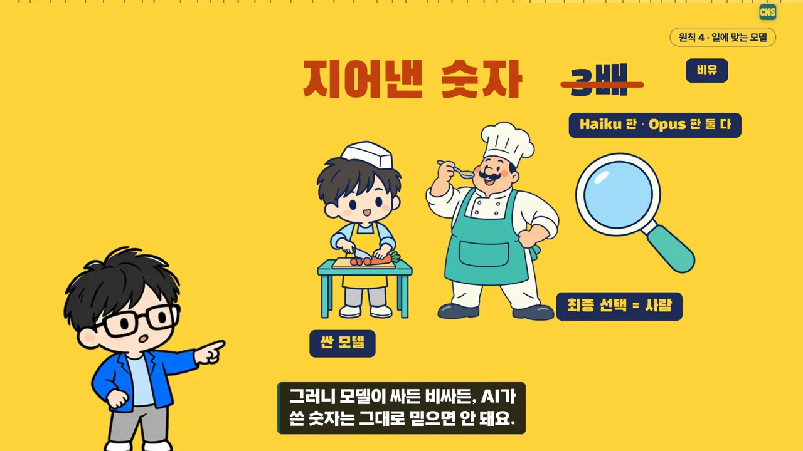
CLAUDE.md만 줄이면
마지막으로 처음 궁금했던 걸 확인했어요. 통째로 맡기는 방식은 그대로 두고, CLAUDE.md의 '배운 것' 목록만 lessons.md로 빼서 필요할 때만 읽게 했어요. 아래 슬라이드 왼쪽이 포스트잇이 덕지덕지 붙은 CLAUDE.md, 오른쪽이 따로 꽂아 둔 lessons.md예요.
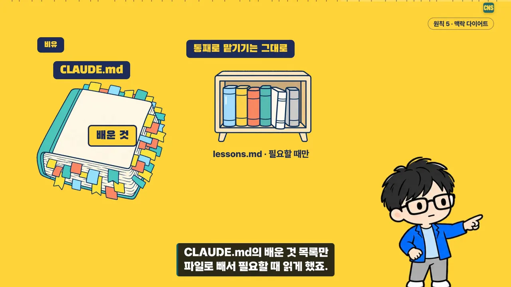
결과는 약 1달러에서 93센트, 10%도 안 줄었어요. 아래 칸을 세어 보면 이유가 보여요. 통째로 맡긴 판은 9~11턴인데, CLAUDE.md를 줄인 판은 11~13턴으로 노란 칸 두 개가 더 붙었어요. 짐은 가벼워졌지만 오가는 횟수가 늘어 아낀 걸 도로 썼어요.
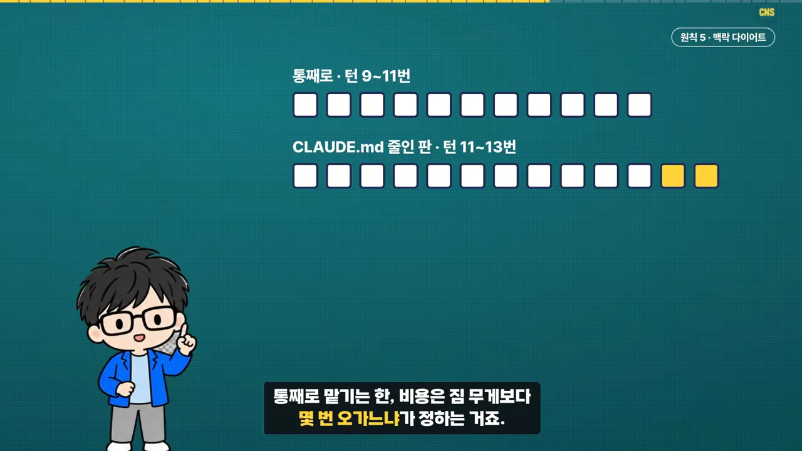
그래도 매 턴 1만 수천 토큰을 덜 싣는 건 분명한 이득이라, 발표자도 CLAUDE.md는 정리할 생각이라고 해요.
결과표로 본 비용 구조
일곱 가지 실험 영수증을 한 화면에 모았어요. 아래 표의 '평균 비용' 열을 위에서 아래로 읽으면 돼요. 통째로 맡기기 $1.0071, CLAUDE.md 다이어트 $0.9316, 판정만 코드로 $0.8192, 도구만 끔 $0.7161까지는 오른쪽 'L0 대비'가 100%에서 71.1% 사이예요. 노랗게 칠한 맨몸 Opus $0.0740부터 자릿수가 바뀌고, 맨 아래 맨몸 Haiku $0.0038은 1/263이에요. '통과' 열은 일곱 줄 모두 30/30이에요.
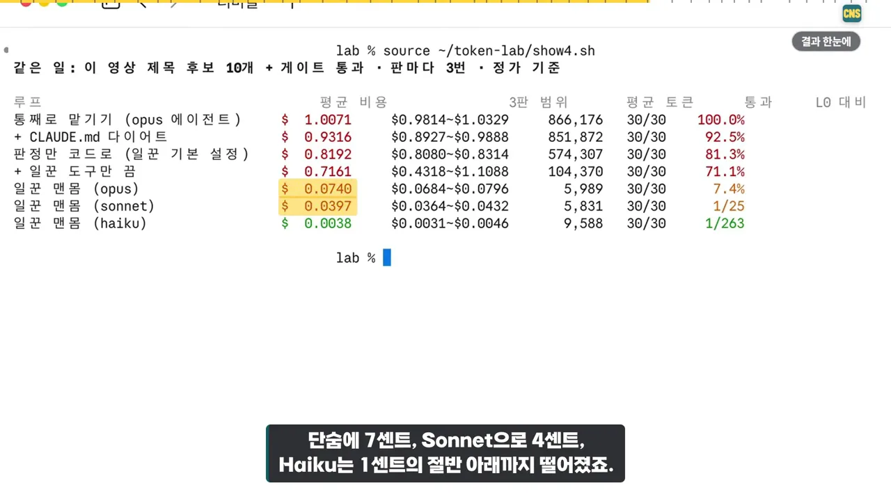
화면 글자가 작아서 표로 옮겼어요. 영상에 나온 값 그대로예요.
| 방식 | 세 판 평균 | 세 판 범위 | 평균 토큰 | 기준 대비 |
|---|---|---|---|---|
| 통째로 맡기기 (Opus 에이전트) | $1.0071 | $0.9814~$1.0329 | 866,176 | 100.0% |
| + CLAUDE.md 다이어트 | $0.9316 | $0.8927~$0.9888 | 851,872 | 92.5% |
| 판정만 코드로 (일꾼 기본 설정) | $0.8192 | $0.8080~$0.8314 | 574,307 | 81.3% |
| + 일꾼 도구만 끔 | $0.7161 | $0.4318~$1.1088 | 104,370 | 71.1% |
| 일꾼 맨몸 (Opus) | $0.0740 | $0.0684~$0.0796 | 5,989 | 7.4% |
| 일꾼 맨몸 (Sonnet) | $0.0397 | $0.0364~$0.0432 | 5,831 | 1/25 |
| 일꾼 맨몸 (Haiku) | $0.0038 | $0.0031~$0.0046 | 9,588 | 1/263 |
숫자 차이가 워낙 커서, 같은 값을 로그 눈금 막대로 다시 그려 봤어요. 눈금 한 칸이 열 배예요. 앞 네 막대는 거의 같은 길이로 몰려 있고, 맨몸 세 막대에서 한 칸씩 뚝뚝 떨어져요.
발표자의 정리는 이래요. 갈린 지점은 하나, 한 번에 얼마나 싣고 그걸 몇 번 다시 싣느냐예요.
요청 한 번에 실리는 띠
이제 비유를 걷고 실제 구조를 봐요. 모델에게 가는 요청 한 번은 아래 그림 위쪽 띠처럼 이어 붙어요. 맨 앞에 도구 정의, 그다음 시스템 프롬프트, CLAUDE.md 같은 설정, 지금까지의 대화 기록, 맨 끝에 새 질문이에요. 위의 괄호 '캐시 읽기: 앞이 같을 때'처럼 캐시는 앞부분이 글자 하나까지 같을 때만 읽기로 처리돼요. 앞쪽이 조금만 달라져도 그 뒤는 '새로 쓰기'가 돼요. 아래 '기본 53,043'과 '맨몸 574'가 두 호출의 띠 길이예요. 맨몸 띠는 짧은 칸 몇 개와 '질문'이 전부예요.
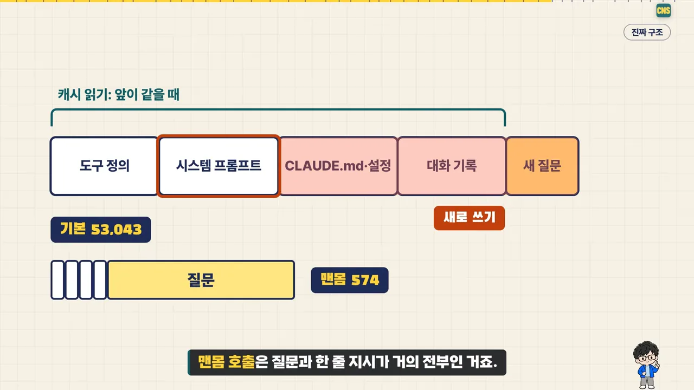
에이전트 방식을 펼치면 아래 계단 그림이 돼요. 한 줄이 한 턴이고, 회색이 다시 보내는 앞부분, 끝의 초록이 새로 붙은 칸이에요. 턴이 늘수록 줄이 길어지고, 긴 줄을 매번 처음부터 다시 보내요.
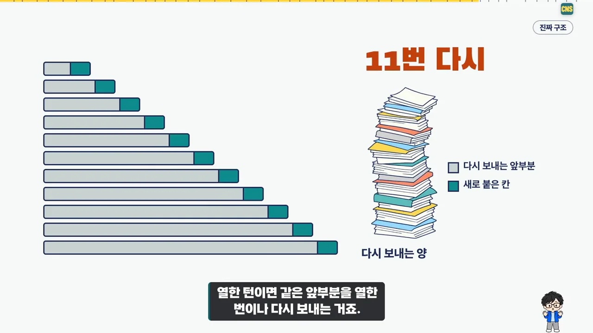
파이썬 루프는 이 고리를 끊어요. 아래 그림 왼쪽의 짧은 띠가 모델에게 한 번만 가고, 결과는 오른쪽 저울(검사 = title_check)과 체크리스트(기억 = 통과 9 · 남은 1)로 넘어가요. 남은 일만 추려 아래쪽 모델에게 다시 짧은 띠로 보낼 뿐이에요.
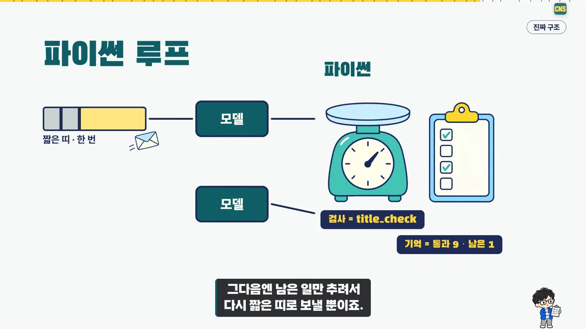
비용 공식
그래서 비용은 대략 아래 세 그림의 곱이에요. 배낭이 '싣는 양', 종이 더미가 '다시 싣는 횟수', 동전 더미가 '모델 단가'예요. 각 그림 아래 태그가 이번 실험에서 그걸 깎은 방법이에요. 싣는 양은 '맨몸', 횟수는 '실패만 새로 · 판정은 코드', 단가는 '싼 모델'이에요.
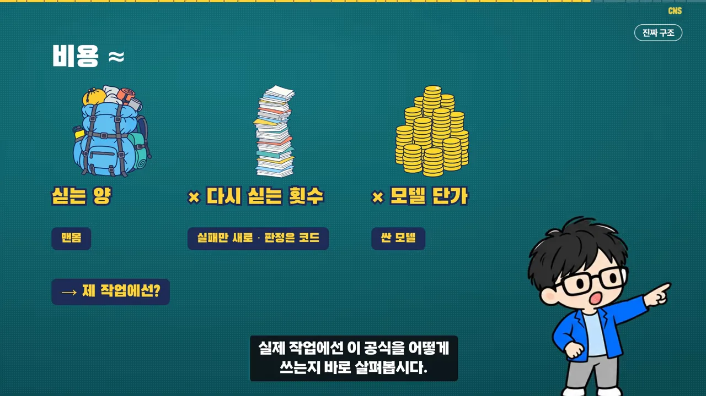
실제 작업과 바로 쓰는 루프 템플릿
발표자의 영상 제작 루프에도 이 원칙이 이미 들어가 있어요. 아래 그림 위쪽 네 칸 대본 → 목소리 → 화면 → 업로드가 영상 하나가 거치는 단계예요. 단계마다 통과 기준은 스크립트가 직접 검사하고, 어디까지 끝났는지는 가운데 체크리스트 state.json 하나가 따로 기억해요. '여기서부터 이어서'라는 태그처럼 중간에 끊겨도 대화를 다시 읽지 않고 그 단계부터 이어 가요.
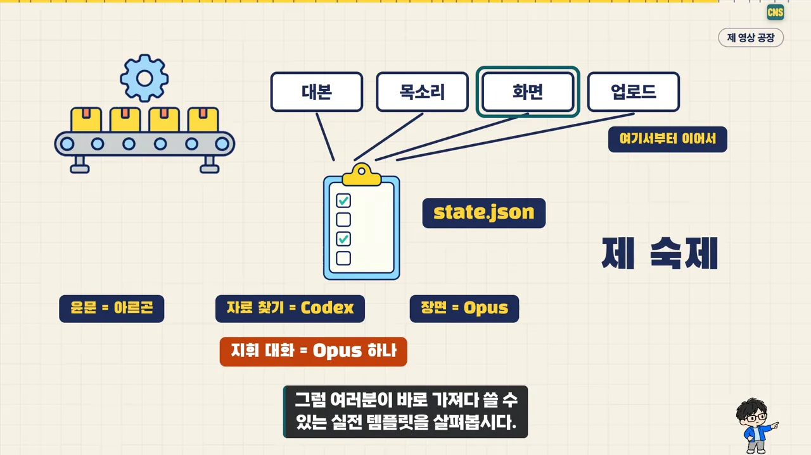
아래쪽 태그처럼 대본 윤문은 아르곤, 자료 찾기는 Codex, 장면은 Opus에게 넘겨요. 상태 파일이 기억을 맡으니 지휘하는 대화가 길어질 이유가 없는데도, 일주일 기록에서는 그 지휘 대화가 Opus로 계속 돌고 있었다는 거예요.
루프 템플릿의 네 부분
발표자는 오늘 실험을 바로 쓸 수 있게 loop_template.py로 정리했어요. 아래 화면이 그 구조 요약이에요. 짧지만 네 부분이 오늘 실험의 네 가지 변화와 하나씩 맞물려요.
check(title)에 통과 기준을 코드로 적어요 — 탈락 이유를 돌려주고, 통과면None이에요. 판정은 코드가 해요.worker()는 맨몸으로 불러요 —claude -p에--tools ""와 한 줄--system-prompt를 붙여요.WORKER_MODEL = "haiku"로 시작해요 — 통과율이 낮으면 한 단계씩 올려요.while todo:루프에서 떨어진 것만 다시 보내요 —fails에 남은 후보와 탈락 이유를 담아 새 호출에 넣어요.
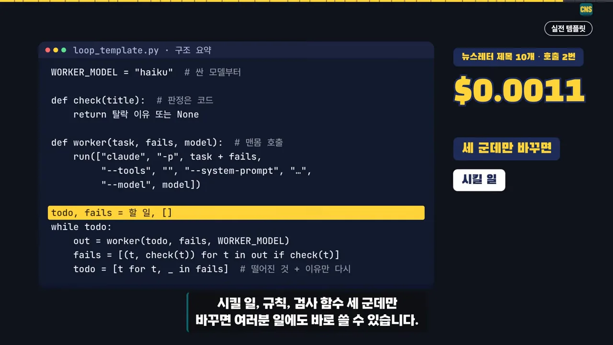
무엇을 루프로 바꿀까요
모든 일을 루프로 바꿀 수는 없어요. 무엇을 해야 할지부터 찾아야 하거나 파일 여러 곳을 뒤져야 하는 일은 지금처럼 에이전트에게 맡기는 게 맞아요. 반대로 아래 슬라이드의 세 가지가 다 맞으면 루프로 바꿀 일이에요. 할 일이 정해져 있는지, 합격 기준을 코드로 쓸 수 있는지, 자주 반복하는지예요.
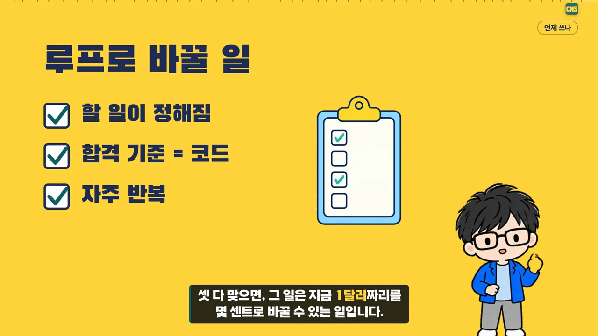
마지막 정리는 네 줄이에요. 아래 체크리스트의 판정은 코드에게, 일꾼은 맨몸으로, 실패만 새로, 쓰기는 싼 모델이에요. 바로 위 비용 공식의 세 항과 겹쳐 보면 각 줄이 어느 항을 깎는지 보여요.
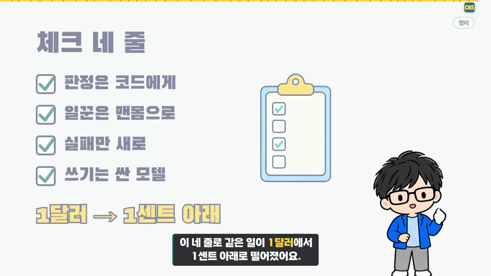
자주 돌리는 일 하나를 골라, 합격 기준부터 스크립트로 적어 보세요.
— 영상 11:46